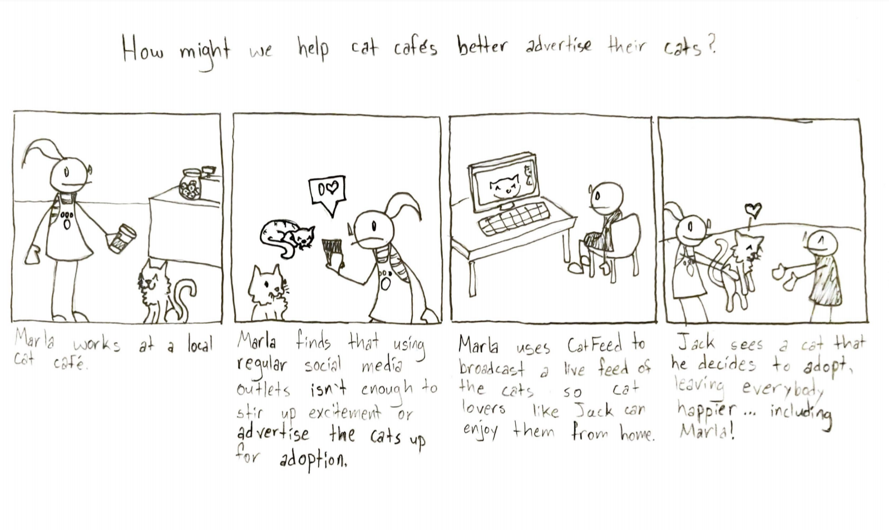
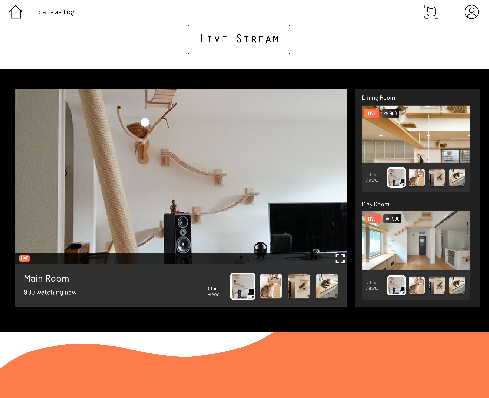

Background
My role in this project involved conducting guerrilla research with cat cafe employees and patrons, creating scenarios and storyboards, running speed-dating sessions, designing mid-fidelity prototypes, designing high-fidelity prototypes for mobile and desktop screens, and pitching our idea. I shared these responsibilities with fellow students Amy Lu, Hailey Motooka, and Jee Rim.
The Problem Space: Pet Adoption
For this project, we were instructed to explore the domain of pet adoption, looking for potential holes that could be fixed with a responsive web design.
Research
To find an issue to solve, we first conducted background research. We scoured the Internet for as much information about pet adoption as we could find. Using this information, we opted to focus on improving the adoption experience at cat cafes.
Next, we went out into the field to conduct guerrilla research. We spoke to cat cafe employees, as well as people who have adopted cats before. We uncovered useful feedback.

Persona Creation
Our next step was to develop personas for adopters, cat cafe employees, and animal shelter owners. With these, we discovered the needs of each individual in the adoption process
Customer Journey Mapping
From these personas, we extrapolated journey maps in order to uncover the pain points that each individual might experience.
The most important needs we found were that adopters desire finding cats that match their personalities, but this takes much time and effort. Service providers and business owners want to spread the word about adoption to increase adoption rates.

Scenarios, Storyboards, and Speed-Dating
From here, we developed many, diverse ideas for solutions to the needs that we identified representing these solutions through 5-sentence scenarios.
We voted on the five best scenarios, and set to work on creating storyboards, such as the one pictured above.
Next, we presented our series of eight storyboards to several different users, seeking to validate the needs we identified. In the end, we found one need and solution to pursue.
Prototyping
Based on that storyboard, we created a wireframe using Whimsical, and submitted this wireframe to our professor for critique.
Finally, we designed a high-fidelity prototype using Figma. After receiving critique on this and iterating on it, we reached our final design: a responsive website that allows potential adopters (and others) to view cats at cafes and shelters through live stream videos hosted at those locations. Furthermore, our proposed website will allow users to take personality quizzes to find their best matches among cats for adoption in their areas.
